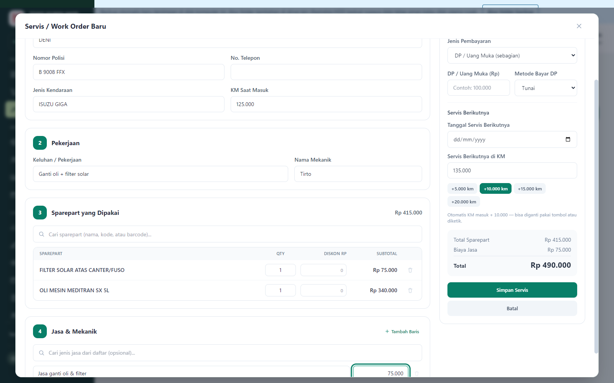
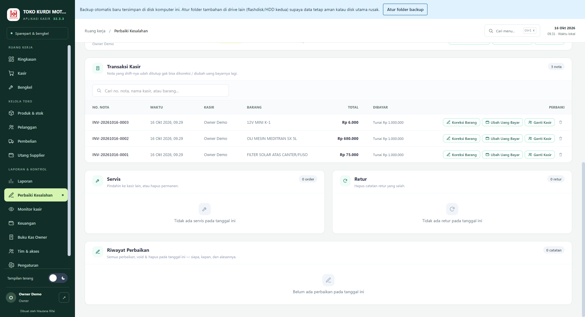
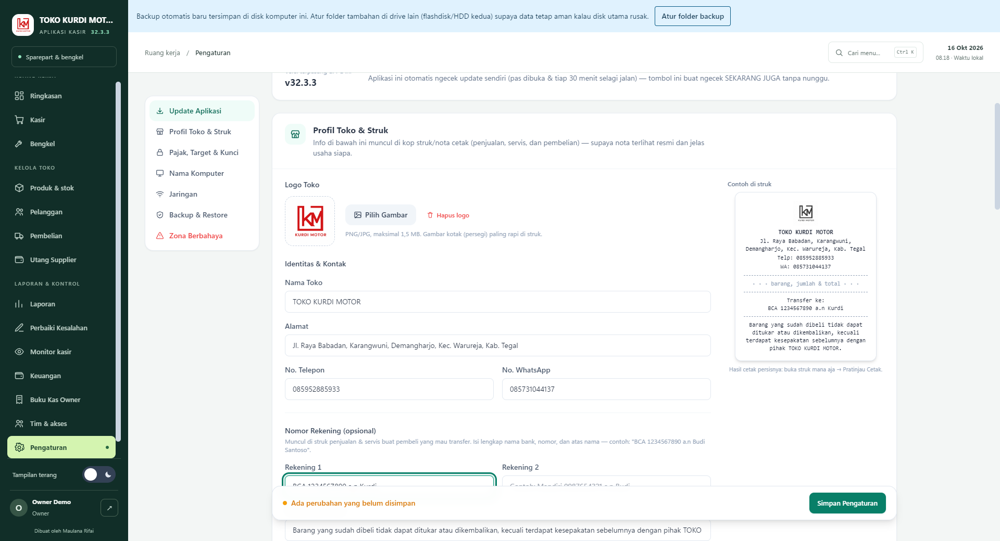

Toko Kurdi Motor
Website toko sparepart dan bengkel.
tokokurdimotor.github.ioPORTOFOLIO
Staf Administrasi · Pembuat Aplikasi Berbasis AI
Aplikasi kasir dan bengkel yang saya bangun sendiri dengan bantuan AI Claude dan Codex, dan dipakai setiap hari di toko sparepart & bengkel milik saya di Warureja, Tegal.



Gambar di atas memakai data contoh.
Website toko sparepart dan bengkel.
tokokurdimotor.github.ioWebsite pemesanan jasa dengan daftar harga per rank.
Website profil restoran dan menu.